African Mining Locations
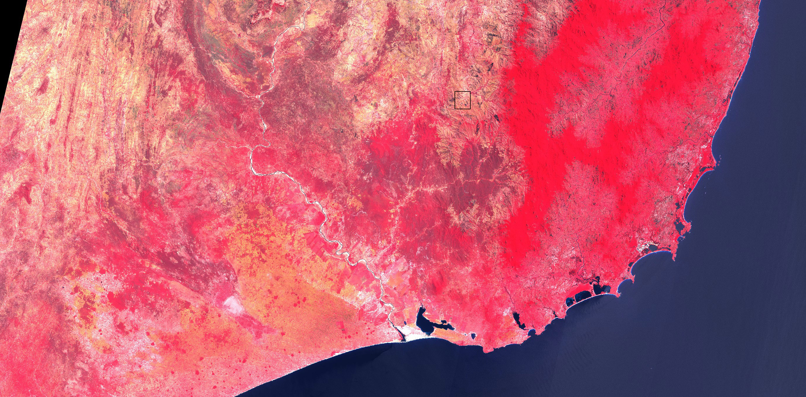
The southeastern region of Madagascar has been mined for decades. Accusations of
poor labor conditions, environmental devastation, and greater ecological damages are still
being dealt with.
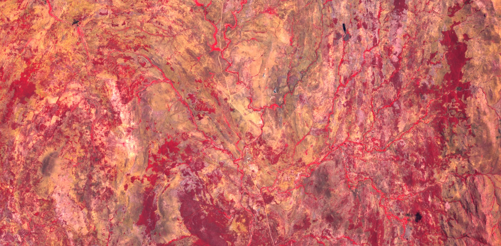
Most recently, Rio Tinto (the British owned Uranium mining company and frequent importer to France)
has been accused of polluting water sources in the southeastern region of the Country with radioactive
materials.
Mine: Ambindandrakemba Mine
Location: Anosy Madagascar
Years Active: 1958 - 1963
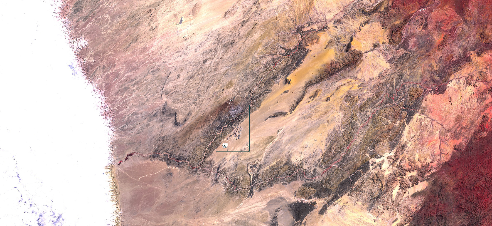
Rossing Uranium mine, located on the western edge of central Namibia is the longest running
active open pit uranium mine on Earth. As long as the mine has been active, workers have
complained of health issues, poor working conditions, and disparities between workers and supervisors.
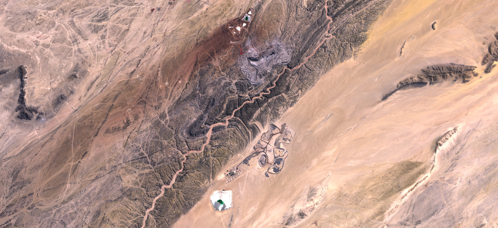
In 2012 CRIIRAD laboratory found elevated radiation levels from the mine tailings had travelled via
wind and river to various regional locations. Hazards and safety issues such as this continue to
happen at Rossing.
Mine: Rossing Uranium Mine
Location: Arandis Namibia
Years Active: 1976 - Present
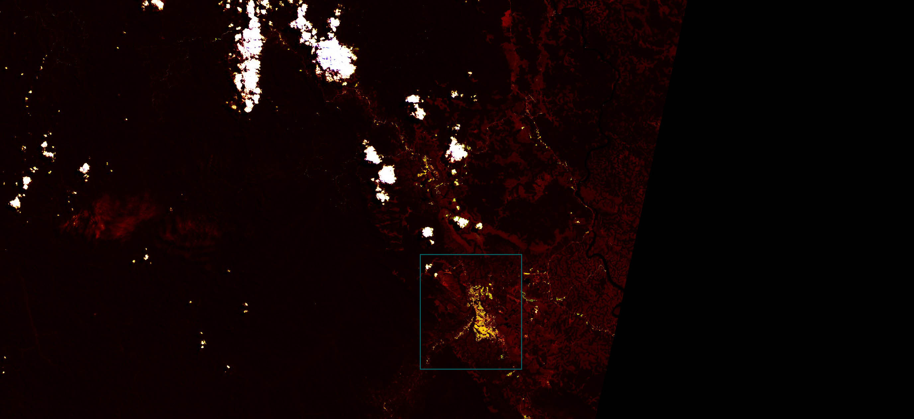
For decades the French company COMUF extracted uranium ore in Mounana gabon. This
ore was then milled at the site. For over a decade the radioactive mill tailings were
released into a creek next to the site, over 2 million tonnes in total. This is only a
small portion of the damage done to the region over time.
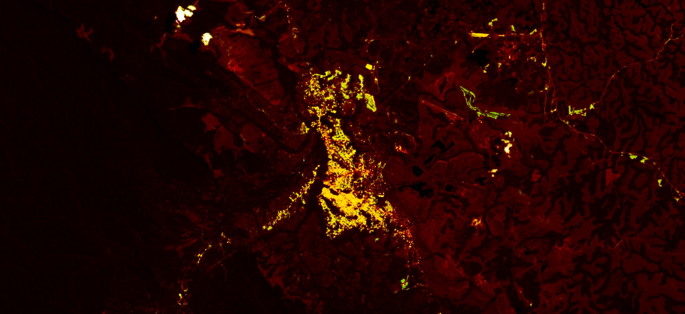
Mill tailings were also dumped in a former open pit mine and left uncovered, with no protective measures
for years. This tailing pit was not marked as a danger in any way and children would even play in it.
Mine: Mounana Uranium Mine
Location: Mounana Gabon
Years Active: 1959 - 1999
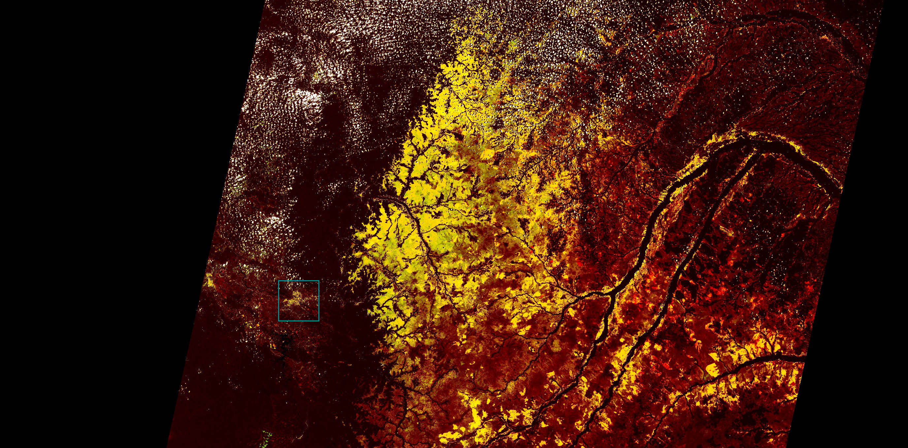
The closest metropolitan area to Mounana mine is the city of Franceville. The city's economy
and population began growing largely at the beginning of uranium mining at Mounana. But
the jobs and benefits that arose from the uranium mining also left many people with illness and
health defects.
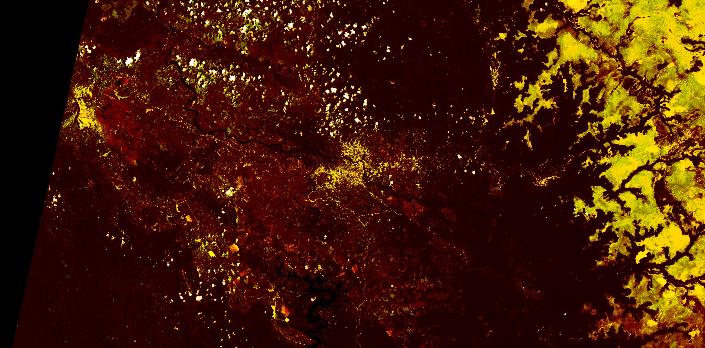
The towns built around the Mounana mine were home to workers from the region and many
from neighboring areas. It was not until French NGOs came to do radiation testing in the
early 2000s, some years after the mine had ceased operations, that something many people
had speculated about for years was proven. The work towns around the mine were built using
mill tailings and had radioactive levels far beyond anything allowable.
Commune: Franceville
Location: Gabon
Years Founded: 1980
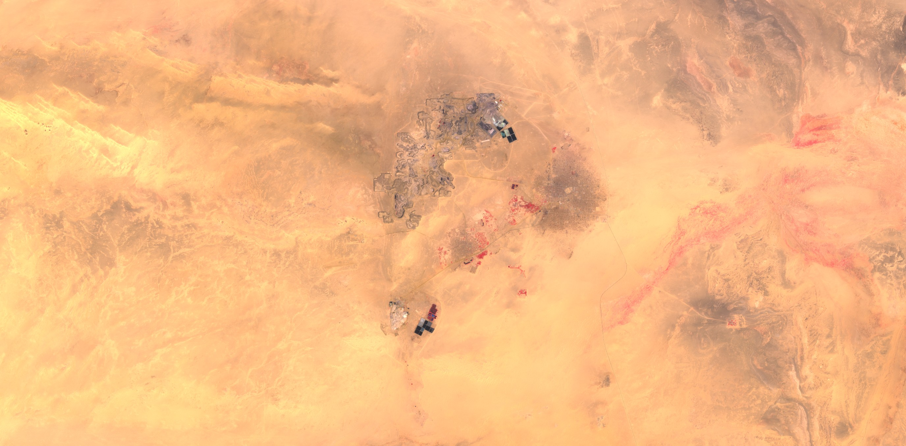
Niger provides one in three French households with power but 90% of Niger
is without electricity. Nigerien activist Ali Idrissa believes that natural
resources should be managed in the interest of and for the benefit of the
people of Niger. He is part of small groups trying to take on the large
international companies exploiting the country's resources.
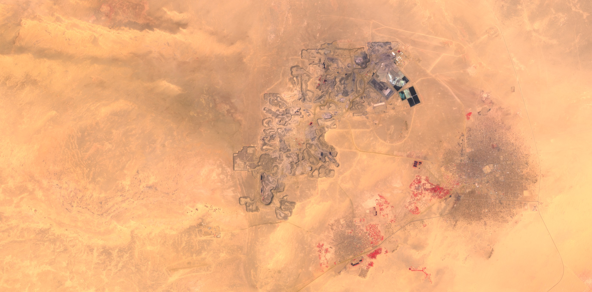
In a similar vein as Gabon and Madagascar, Niger has been dealing with the ramifications
of uranium mining by way of environmental and health concerns. The town of Arlit has
near multiple large uranium operations has seen cases of death and unusual health concerns.
Mine: Somair uranium mine
Location: Arlit Niger
Years Active: 1969 - Present
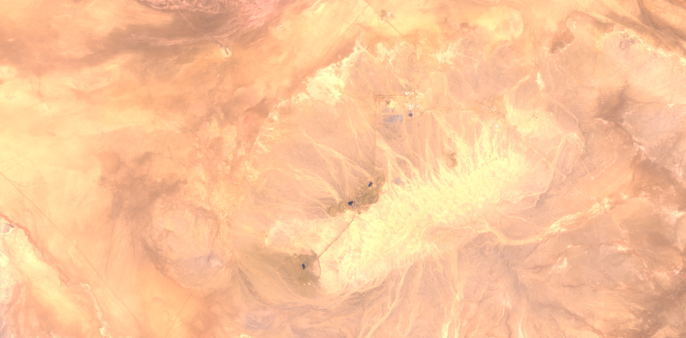
Before being dissolved the governing uranium corporation dealing with French interest in Niger,
Areva, had declared that in 40 years of mining operations there had not been a single case
of mining related illness or death reported. This response contradicts measurements and actions
taken by NGOs and local activists.
Mine: Azelik Uranium Deposit
Location: Azelik Niger
Years Active: Unknown - Present

Transport routes that Uranium takes to get from Niger to France are not easily accessable. what
Mine: Tchirozerine Uranium Mine
Location: Tchirozerine Niger
Years Active: 2007 - Present